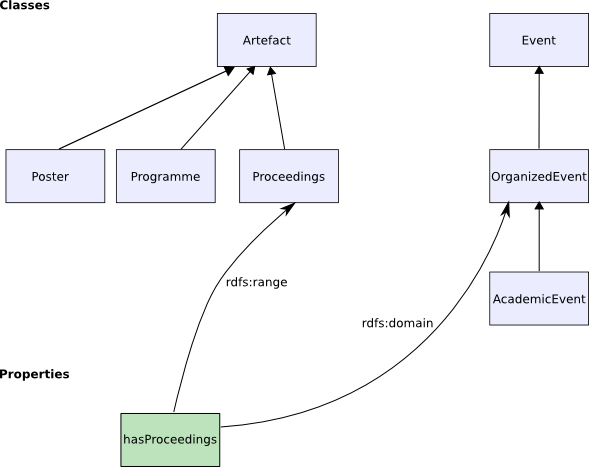

In this section I will give a general introduction to the the Jena2 ontology API. I'll also describe a range of common user tasks. I won't go into all of the many details of the API here: you should expect to refer to the Jena2 Javadoc to get full details of the capabilities of the API. Feedback, (via the jena-dev support list) is welcomed.
I will assume that you have a basic familiarity with RDF and with Jena. There are many other Jena help documents you can read for background on these topics. There is also a Jena programming tutorial you can follow through.
Jena is a programming toolkit, using the Java programming language. While there are a few command-line tools to help you perform some key tasks using Jena, mostly you use Jena by writing Java programs. The examples in this document will be primarily code samples.
I also won't be explaining the OWL or RDFS ontology languages in much detail in this document. You should expect to refer to supporting documentation for details on those languages, for example the W3C OWL document index.
Note: At the time of writing, work on OWL version 1.1 is still underway. No decision has yet been made about when Jena will support the new OWL 1.1 features. I will only use OWL 1.0 features in this document.
The section of the manual is broken into a number of sections. It is not necessary to read them in sequence, though later sections may refer to concepts and techniques introduced in earlier sections. The sections are:
I hope that this document will be sufficient to help most readers to get started using the Jena ontology API. For further support, please post questions to the Jena support list: jena-dev@yahoogroups. You can also report bugs directly into the Jena bug tracker on SourceForge.
Please note that we prefer that you use the support list or the bug-tracker to communicate with the Jena team, rather than emailing the team members directly.
In a widely-quoted definition, an ontology is
"... a specification of a conceptualization" [Gruber, T. 1993]
Let's unpack that brief characterisation a bit. It means that an ontology allows a programmer to specify, in an open, meaningful, way the concepts and relationships that collectively characterise some domain. Examples might be the concepts of red and white wine, grape varieties, vintage years, wineries and so forth that characterise the domain of 'wine', and relationships such as 'wineries produce wines', 'wines have a year of production'. This wine ontology might be developed initially for a particular application, such as a stock-control system at a wine warehouse. As such, it may be considered similar to a well-defined database schema. The advantage to an ontology is that it is an explicit, first-class description. So having been developed for one purpose, it can be published and reused for other purposes. For example, a given winery may use the wine ontology to link its production schedule to the stock system at the wine warehouse. Alternatively, a wine recommendation program may use the wine ontology, and a description (ontology) of different dishes to recommend wines for a given menu.
There are many ways of writing down an ontology, and a variety of opinions as to what kinds of definition should go in one. In practice, the contents of an ontology are largely driven by the kinds of application it will be used to support. In Jena, we do not take a particular view on the minimal or necessary components of an ontology. Rather, we try to support a variety of common techniques. In this manual I try to explain what is – and to some extent what isn't – possible using Jena's ontology support.
Since Jena is fundamentally an RDF platform, Jena's ontology support is limited to ontology formalisms built on top of RDF. Specifically this means RDFS, the varieties of OWL, and the now-obsolete DAML+OIL. I will provide a very brief introduction to these languages here. Please refer to the extensive on-line documentation for these formalisms for complete and authoritative detail.
RDFS is the weakest ontology language supported by Jena. RDFS allows the ontologist to build a simple hierarchy of concepts, and a hierarchy of properties. Consider the following trivial characterisation (with apologies to biology-trained readers!):
Table 1: A simple concept hierarchy
Using RDFS, I can say that my ontology has five classes,
and that Plant is a sub-class of Organism and
so on. So every animal is also an organism. A good way to think of these
classes is as describing sets of individuals: organism is
intended to describe a set of living things, some of which are animals
(i.e. a sub-set of the set of organisms is the set of animals), and some
animals are fish (a subset of the set of all animals is the set of all
fish).
To describe the attributes of these classes, I can associate properties
with the classes. For example, animals have sensory organs (noses,
eyes, etc.). A general property of an animal might be senseOrgan, to
denote any given sensory organs a particular animal has. In general,
fish have eyes, so a fish might have a eyes property to
refer to a description of the particular eye structure of some species.
Since eyes are
a type of sensory organ, we can capture this relationship between these
properties by saying that eye is a sub-property-of senseOrgan.
Thus if a given fish has two eyes, it also has two sense organs. (It may
have more, but we know that it must have two).
I can describe this simple hierarchy with RDFS. In general, the class hierarchy is a graph rather than a tree (i.e. not like Java class inheritance). The slime mold is popularly, though perhaps not accurately, thought of as an organism that has characteristics of both plants and animals. I might model a slime mold in my ontology as a class that has both plant and animal classes among its super-classes. RDFS is too weak a language to express that a thing cannot be both a plant and an animal (which is perhaps lucky for the slime molds). In RDFS, I can only name the classes, I cannot construct expressions to describe interesting classes. However, for many applications it is sufficient to state the basic vocabulary, and RDFS is perfectly well suited to this.
Note also that I can both describe classes, in general terms, and
I can describe particular instances
of those classes. So there may be a particular individual Fred who is a
Fish (i.e. has rdf:type Fish), and who has two eyes. His
companion Freda, a
Mexican Tetra, or blind cave fish, has no eyes. One
use of an ontology is to allow us to fill-in missing information about
individuals. Thus, though it is not stated directly, we can deduce that Fred
is also an Animal and an Organism. Assume that there was no rdf:type
asserting that Freda is a Fish. We may still infer Freda's rdf:type
since Freda has lateral lines
as sense organs, and these only occur in fish. In RDFS, we state that the
domain of the lateralLines property is the Fish
class, so an RDFS reasoner can infer that Freda must be a fish.
In general, OWL allows me to say everything that RDFS allows, and
much more besides. A key part of OWL is the ability to describe classes
in more interesting and complex ways. For example, in OWL we can say
that Plant and Animal are disjoint classes: no individual can
be both a plant and an animal (which would have the unfortunate
consequence of making SlimeMold an empty
class). SaltwaterFish might be the intersection of
Fish and
the class SeaDwellers (which also includes, for example, cetaceans and
sea plants).
Suppose I have a property covering, intended to
represent the scales of a fish or the fur of a mammal. I can now refine
the mammal class to be 'animals that have a covering that is hair',
using a property restriction to express the condition that
property covering has a value from the class Hair.
Similarly TropicalFish might be the intersection of the
class of Fish and the class of things that have TropicalOcean
as their habitat.
Finally (for this brief overview), I can say more about properties in OWL. In RDFS, properties can be related via a property hierarchy. OWL extends this by allowing properties to be denoted as transitive, symmetric or functional, and allow one property to be declared to be the inverse of another. OWL also makes a distinction between properties that have data-values (known as literals in RDF terminology) as their range, or other individuals. Respectively these are datatype properties and object properties. A consequence of the RDF lineage of OWL is that OWL ontologies cannot make statements about literal values. I cannot say in RDF that 7 has the property of being a prime number. I can, of course, say that the class of primes includes 7, but that doesn't require a number to be the subject of an RDF statement. In OWL, this distinction is important since only object properties can be transitive or symmetric.
The OWL language is sub-divided into three syntax classes: OWL Lite, OWL DL and OWL Full. OWL DL does not permit some constructions allowed in OWL Full, and OWL Lite has all the constraints of OWL DL plus some more. The intent for OWL Lite and OWL DL is to make the task of reasoning with expressions in that subset more tractable. Specifically, OWL DL is intended to be able to be processed efficiently by a description logic reasoner. OWL Lite is intended to be amenable to processing by a variety of reasonably simple inference algorithms, though experts in the field have challenged how successfully this has been achieved.
While the OWL standards documents note that OWL builds on top of the (revised) RDF specifications, it is possible to treat OWL as a separate language in its own right, and not something that is built on an RDF foundation. This view uses RDF as a serialisation syntax; the RDF-centric view treats RDF triples as the core of the OWL formalism. While both views are valid, in Jena we take the RDF-centric view.
DAML+OIL is very similar to OWL Full. This is not surprising, since the W3C's Web Ontology Working Group, who designed OWL, took DAML+OIL as their starting point. Some constructions in OWL have been added to the capabilities of DAML+OIL, and one or two have been removed. For the purposes of this brief overview, however, the expressiveness of DAML+OIL is comparable to that of OWL.
Note: DAML+OIL is effectively now obsolete. While you can still find some DAML ontologies on the web, you should work with OWL or RDFS to maximise the longevity of your models.
As I outlined above, there are various different ontology languages available for representing ontology information on the semantic web. They range from the most expressive, OWL Full, through to the weakest, RDFS. Through the Ontology API, Jena aims to provide a consistent programming interface for ontology application development, independent of which ontology language you are using in your programs.
The Jena Ontology API
is language-neutral: the Java class names do not mention the underlying language.
For example, the OntClass Java class can represent an OWL class,
RDFS class, or DAML class.
To represent the differences between the various representations,
each of the ontology languages has a profile, which lists the permitted constructs
and the names of the classes and properties. Thus in the DAML profile, the URI for object
property is daml:ObjectProperty
(short for http://www.daml.org/2001/03/daml+oil#ObjectProperty),
in the OWL profile is it owl:ObjectProperty
(short for http://www.w3.org/2002/07/owl#ObjectProperty)
and in the RDFS profile it is null since RDFS does not define object properties.
The profile is bound to an ontology model, which is an extended version of Jena's
Model
class.
The base Model allows access to the statements in a collection of RDF data.
OntModel
extends
this by adding support for the kinds of objects expected to be in an ontology: classes (in
a class hierarchy), properties (in a property hierarchy) and individuals. When you're
working with an ontology in Jena, all of the state information remains encoded as RDF
triples (which Jena calls Statements) stored in the RDF model. The ontology
API doesn't change the RDF representation of ontologies. What it does do is add
a set of convenience classes and methods that make it easier for you to write programs that
manipulate the RDF statements.
The predicate names
defined in the ontology language correspond to the accessor methods on the Java classes
in the API. For example, an OntClass
has a method to list its super-classes, which corresponds to the values of the subClassOf
property in the RDF representation. This point is worth re-emphasising: no
information is stored in the OntClass object itself.
When you call the OntClass listSuperClasses() method, Jena will retrieve the information
from the underlying RDF statements. Similarly adding a subclass to an OntClass
asserts an additional RDF statement into the model.
One of the main reasons for building an ontology-based application is to use
a reasoner to derive additional truths about the concepts you are modelling. We
saw a simple instance of this above: the assertion "Fred is a Fish" entails
the deduction "Fred is an Animal". There are many different styles of automated
reasoner, and very many different reasoning algorithms. Jena includes support
for a variety of reasoners through the
inference API. A common feature of Jena
reasoners is that they create a new RDF model which appears to contain the triples
that are derived from reasoning, as well as the triples that were asserted in
the base model. This extended model is, nevertheless, still conforms to the contract
for Jena models. So it can be used wherever a base model can be used. The ontology
API exploits this feature: the convenience methods the ontology API provides can
query an extended inference model in just the same way as a plain RDF model. In fact,
this is such a common pattern that we provide simple recipes for constructing
ontology models whose language, storage model and reasoning engine can all be
simply specified when an OntModel is created. I'll show examples later.
Figure 2 shows one way of visualising this:

Figure 2: the statements seen by the OntModel
Graph is an internal Jena interface that supports the composition
of sets of RDF triples. The asserted statements, which may have been read in
from an ontology document, are held in the base graph.
The reasoner, or
inference engine, can use the contents of the base graph and the
semantic rules of the language to show a more complete set of
statements. This is also presented via a Graph interface,
so the model works only with the outermost interface.
This regularity allows us to very easily build
ontology models with or without a reasoner. It also means that the
base graph can be an in-memory store, a database-backed persistent
store, or some other storage structure altogether (e.g. an LDAP
directory) again without affecting the operation of the ontology model.
Deciding which Java abstract class to use to represent a given RDF resource can be surprisingly subtle. Consider the following RDF sample:
<owl:Class rdf:ID="DigitalCamera"> </owl:Class>
This declares that the resource with the relative URI
#DigitalCamera is an OWL ontology class. It suggests that it
would be appropriate to model
that declaration in Java with an instance of an OntClass. Now
suppose we add a triple to the RDF model to augment the class
declaration with some more information:
<owl:Class rdf:ID="DigitalCamera"> <rdf:type owl:Restriction /> </owl:Class>
Now I am saying that #DigitalCamera is an OWL
Restriction. Restriction is a subclass of owl:Class, so this is a perfectly
consistent operation. The problem I have is that Java does not allow
me to dynamically change the Java class of the object representing this
resource. The resource has not changed: it still has URI #DigitalCamera.
But the appropriate Java class Jena might choose to model it has changed
from OntClass to Restriction. Conversely, if
I subsequently remove the rdf:type owl:Restriction from the model, using the
Restriction Java class is no longer appropriate.
Even worse, OWL Full allows me to state the following (rather counter-intuitive) construction:
<owl:Class rdf:ID="DigitalCamera"> <rdf:type owl:ObjectProperty /> </owl:Class>
That is, #DigitalCamera is both a class and
a property. While this may not be a very useful operation, it
illustrates a basic point: we cannot rely on a consistent or unique
mapping between an RDF resource and the appropriate Java abstraction.
Jena accepts this basic characteristic of polymorphism at the
RDF level by considering that the Java abstraction (OntClass,
Restriction, DatatypeProperty, etc.) is just a view or facet of
the resource. That is, there is a one-to-many mapping from a resource to
the facets that the resource can present. If the resource is typed as
an owl:Class, it can present the OntClass facet;
given other types, it can present other facets. Jena provides the
.as() method to efficiently map from an RDF object to one of
its allowable facets.
Given a RDF object (i.e. an instance of com.hp.hpl.jena.rdf.model.RDFNode
or one of its sub-types), I can get a facet by invoking as()
with an argument that denotes the facet required. Specifically, the facet is
identified by the Java class object of the desired facet. For example, to
get the OntClass facet of a resource, I can do:
Resource r = myModel.getResource( myNS + "DigitalCamera" ); OntClass cls = (OntClass) r.as( OntClass.class );
This pattern allows me to defer decisions about
the correct Java abstraction to use until run-time. The choice can depend on the
properties of the resource itself. If a given RDFNode will not support
the conversion to a given facet, it will raise a ConversionException.
I can test if .as() will succeed for a given facet with
canAs(). This RDF-level polymorphism is used extensively in
the Jena ontology API to allow maximum flexibility in handling ontology data.
To illustrate the principles of using the ontology API, I will use examples drawn
from Tom Heath's
ESWC ontology.
This ontology presents a simple model for describing the concepts and activities
associated with a typical academic conference.
A copy of the ontology serialized in N3 is included with the Jena
download, see: [eswc-2006-09-21.rdf].
A subset of the classes and properties from the ontology are shown in Figure 3:

Figure 3: Classes and properties from ESWC ontology
I will use elements from this ontology to illustrate the ontology API throughout the rest of this document.
An ontology model is an extension of the Jena RDF model that provides extra
capabilities for handling ontologies. Ontology models are created
through the Jena ModelFactory.
The simplest way to create an ontology model is as follows:
OntModel m = ModelFactory.createOntologyModel();
This will create an ontology model with the default settings, which are set for maximum compatibility with the previous version of Jena. These defaults are:
In many applications, such as driving a GUI, RDFS inference is too strong (for example, every
class is inferred to be a sub-class of owl:Thing. In other applications, stronger
reasoning is needed. In general, to create an OntModel with a particular reasoner
or language profile, you should pass a model specification to the createOntologyModel
call. For example, an OWL model that performs no reasoning at all can be created with:
OntModel m = ModelFactory.createOntologyModel( OntModelSpec.OWL_MEM );
To create an ontology model for a particular language, but leaving all of the other values as defaults, you should pass the URI of the ontology language to the model factory. The URI strings for the various language profiles are:
|
Ontology language |
URI |
|---|---|
| RDFS |
http://www.w3.org/2000/01/rdf-schema#
|
| DAML+OIL |
http://www.daml.org/2001/03/daml+oil#
|
| OWL Full |
http://www.w3.org/2002/07/owl#
|
| OWL DL |
http://www.w3.org/TR/owl-features/#term_OWLDL
|
| OWL Lite |
http://www.w3.org/TR/owl-features/#term_OWLLite
|
These URI's are used to look-up the language profile from the
ProfileRegistry.
Fortunately, the profile registry contains declared constants so that you do
not have to remember these URI's. Please note that the URI's denoting OWL Lite
and OWL DL are not officially sanctioned by the OWL standard.
To create an ontology model for handling DAML ontologies, use either of:
OntModel m = ModelFactory.createOntologyModel( OntModelSpec.DAML_MEM ); OntModel m = ModelFactory.createOntologyModel( ProfileRegistry.DAML_LANG );
Beyond these basic choices, the complexities of configuring an ontology model
are wrapped up in a recipe object called
OntModelSpec.
This specification allows complete control over the configuration choices for the ontology
model, including the language profile in use, the reasoner, and the means of
handling compound documents. A number of common recipes are
pre-declared as constants in OntModelSpec, and listed below.
| OntModelSpec | Language profile | Storage model | Reasoner |
|---|---|---|---|
| OWL_MEM | OWL full | in-memory | none |
| OWL_MEM_TRANS_INF | OWL full | in-memory | transitive class-hierarchy inference |
| OWL_MEM_RULE_INF | OWL full | in-memory | rule-based reasoner with OWL rules |
| OWL_MEM_MICRO_RULE_INF | OWL full | in-memory | optimised rule-based reasoner with OWL rules |
| OWL_MEM_MINI_RULE_INF | OWL full | in-memory | rule-based reasoner with subset of OWL rules |
| OWL_DL_MEM | OWL DL | in-memory | none |
| OWL_DL_MEM_RDFS_INF | OWL DL | in-memory | rule reasoner with RDFS-level entailment-rules |
| OWL_DL_MEM_TRANS_INF | OWL DL | in-memory | transitive class-hierarchy inference |
| OWL_DL_MEM_RULE_INF | OWL DL | in-memory | rule-based reasoner with OWL rules |
| OWL_LITE_MEM | OWL Lite | in-memory | none |
| OWL_LITE_MEM_TRANS_INF | OWL Lite | in-memory | transitive class-hierarchy inference |
| OWL_LITE_MEM_RDFS_INF | OWL Lite | in-memory | rule reasoner with RDFS-level entailment-rules |
| OWL_LITE_MEM_RULES_INF | OWL Lite | in-memory | rule-based reasoner with OWL rules |
| DAML_MEM | DAML+OIL | in-memory | none |
| DAML_MEM_TRANS_INF | DAML+OIL | in-memory | transitive class-hierarchy inference |
| DAML_MEM_RDFS_INF | DAML+OIL | in-memory | rule reasoner with RDFS-level entailment-rules |
| DAML_MEM_RULE_INF | DAML+OIL | in-memory | rule-based reasoner with DAML rules |
| RDFS_MEM | RDFS | in-memory | none |
| RDFS_MEM_TRANS_INF | RDFS | in-memory | transitive class-hierarchy inference |
| RDFS_MEM_RDFS_INF | RDFS | in-memory | rule reasoner with RDFS-level entailment-rules |
For details of reasoner capabilities, please see the inference documentation and the Javadoc for OntModelSpec. See also further discussion below.
Note: it is primarily the choice of reasoner, rather than the choice of language profile, that determines which entailments are seen by the ontology model. However, using an OWL reasoner with DAML source data will result in few additional entailments being seen by the ontology model.
To create a model with a given specification, you should invoke the ModelFactory
as follows:
OntModel m = ModelFactory.createOntologyModel( <model spec> );
for example:
OntModel m = ModelFactory.createOntologyModel( OntModelSpec.OWL_MEM_MICRO_RULE_INF );
To create a custom model specification, you can create a new one from its constructor, and call the various setter methods to set the appropriate values. More often, you want a variation on an existing recipe. In this case, you copy an existing specification and then update the copy as necessary:
OntModelSpec s = new OntModelSpec( OntModelSpec.OWL_MEM ); s.setDocumentManager( myDocMgr ); OntModel m = ModelFactory.createOntologyModel( s );
The OWL and DAML ontology languages include some facilities for creating modular ontologies that can be re-used in a similar manner to software modules. In particular, one ontology can import another. Jena helps ontology developers to work with modular ontologies by automatically handling the imports statements in ontology models.
The key idea is that the base model of an ontology model is actually a collection of models, one per imported model. That means we have to modify figure 2 a bit. Figure 4 shows how the ontology model builds a collection of import models:

Figure 4: ontology model compound document structure for imports
I will use the term document to describe an ontology serialized in some transport syntax, such as RDF/XML or N3. This terminology isn't used by the OWL or RDFS standards, but it is a convenient way to refer to the written artifacts. However, from a broad view of the interlinked semantic web, a document view imposes artificial boundaries between regions of the global web of data.
We will load an ontology document into an
ontology model in the same way as a normal Jena model, using the read
method. There are several variants on read, that handle differences in the source
of the document (to be read from a resolvable URL or directly from an input
stream or reader), the base URI that will resolve any relative URI's in the
source document, and the serialisation language. In summary, these variants
are:
read( String url ) read( Reader reader, String base ) read( InputStream reader, String base ) read( String url, String lang ) read( Reader reader, String base, String Lang ) read( InputStream reader, String base, String Lang )
You can use any of these methods to load an ontology document.
Note that we advise that you avoid the the read() variants that
accept a java.io.Reader argument
when loading XML documents containing internationalised
character sets, since the handling of character encoding by the Reader
and by XML parsers is not compatible.
By default, when an ontology model reads an ontology document, it
will also locate and load the document's imports. An OWL or DAML document
may contain an individual of class Ontology, which contains meta-data
about that document itself. For example:
<owl:Ontology rdf:about=""> <dc:creator rdf:value="Ian Dickinson" /> <owl:imports rdf:resource="http://jena.hpl.hp.com/example-ont" /> </owl:Ontology>
The construct rdf:about="" is a relative URI that
will resolve to the document's base URI: in other words it's a shorthand
way of referring to the document itself. The owl:imports line
states that this ontology is
constructed using classes, properties and individuals from the referenced
ontology. When OntModel reads this document, it will notice
the owl:imports line and attempt to load the imported ontology
into a sub-model of the ontology model being built. The definitions from both the
base ontology and all of the imports will be visible to the reasoner.
Each imported ontology document is held in a separate graph structure. This is important: I want to keep the original source ontology separate from the imports. When I write the model out again, normally only the base model is written (the alternative is that all you see is a confusing union of everything). And when I update the model, only the base model changes.
Imports are processed recursively, so if my base document imports ontology A, and A imports B, I will end up with the structure shown in Figure 4. Note that the imports have been flattened out. A cycle check is used to prevent the document handler getting stuck if, for example, A imports B which imports A!
Each ontology model has an associated document manager that assists with
the processing and handling of documents-related concerns. For convenience,
there is one global document manager that is used by default by ontology
models. You can get a reference to this shared instance through
OntDocumentManager.getInstance(). In many cases,
it will be sufficient to simply change the settings on the global
document manager to suit your application's needs. However, for
more fine-grain control, you can create
separate document managers, and pass them
to the ontology model when it is created through the model factory.
To do this, create an ontology specification object (see above),
and set the document manager. For example:
OntDocumentManager mgr = new OntDocumentManager(); // set the mgr's properties now ... some code ... // now use it OntModelSpec s = new OntModelSpec( OntModelSpec.RDFS_MEM ); s.setDocumentManager( mgr ); OntModel m = ModelFactory.createOntologyModel( s );
Note that the model retains a reference to the document manager it was created with. Thus if you change a document manager's properties, it will affect models that have previously been constructed with that document manager.
Since the document manager has a large number of configurable
options, there are two ways in which you can customise it to your
application
requirements. Firstly, you can set the individual parameters of the document manager
by Java code. Alternatively, when a given document manager is
created it can load values for the various parameters from a policy
file, expressed in RDF. The document manager has a list of URL's
which it will search for a policy document. It will stop at the first
entry on the list that resolves to a retrievable document. The default
search path for the policy is: file:./etc/ont-policy.rdf;file:ont-policy.rdf.
You can find the default policy, which can serve as a template for defining
your own policies, in the etc/ directory under the
Jena download directory.
You can set the general properties of the document manager in the policy as follows:
<DocumentManagerPolicy> <!-- policy for controlling the document manager's behaviour --> <processImports rdf:datatype="&xsd;boolean">true</processImports> <cacheModels rdf:datatype="&xsd;boolean">true</cacheModels> </DocumentManagerPolicy>
You can find the simple schema that declares the various properties that you can use in
such an ontology document policy in the vocabularies directory of the Jena download. It's called ont-manager.rdf. To change the search path that
the document manager will use to initialise itself, you can either pass the new
search path as a string when creating a new document manager object, or
call the method setMetadataSearchPath().
In order for the document manager to build the union of the imported documents
(which we may refer to as the imports closure), there must be some means of creating
new graphs to store the imported ontologies. Loading a new import means that there
needs to be a new graph added
Jena defines a model maker as a simple interface that allows
different kinds of model storage (in memory, file-backed, in a persistent database, etc.)
to be created on demand. For the database case, this may include passing the database
user-name and password and other connection parameters. New model makers can
be created with the ModelFactory.
There are two cases in which we may want to create storage for
models on-demand. The first is when creating the OntModel
for the first time, some variants of createOntologyModel
will allocate space for the base model (instead of, for
example, being handed a base model to use as one of the method
arguments). The second case when storage must be allocated is when
adding an imported document to the union of imports. These cases often
require different policies, so the OntModelSpec contains
two model maker parameters: the base model maker and imports
model maker, available via getBaseModelMaker() and getImportsModelMaker()
methods respectively.
The default specifications in OntModelSpec that begin MEM_ use an in-memory model maker for the both the base model and the imported documents.
Implementation note: internally to Jena, we use
Graph as a primary data structure. However, your code will
almost always refer to models, not graphs. What's happening is that a Model
is a wrapper around the Graph, which balances a rich,
convenient programing interface (Model) with a simple,
manageable internal data structure (Graph). Hence some
potential confusion in that Figure 4, above, refers to a structure
containing graphs, but we use a ModelMaker to generate new stores. The document manager extracts the
appropriate graph from the containing model. Except in cases where you
are extending Jena's internal structures, you should think of Model
as the container of RDF and ontology data.
Normally, loading imports during the read() call
automatic. To read() an ontology without building the imports closure, call
the method setProcessImports( false ) on the
document manager object before calling read().
Alternatively, you can set the processImports property
in the policy file. You can also be more selective, and ignore only
certain URI's when loading the imported documents.
To selectively skip certain named imports,
call the method addIgnoreImport( String uri )
on the document manager object, or set the ignoreImport
property in the policy.
An advantage of working with ontologies is that we can reuse work done by other ontologists, by importing their published ontologies into our own. Sometimes, however, this means that there is an Internet firewall between the ontology-based application and the source of an imported ontology. Even if it's possible to traverse the firewall through an HTTP proxy, retrieving files from an HTTP connection may impose unacceptable delays when starting an application. In the worst case, we may find that ontology on which our application depends is temporarily or permanently unavailable from the original published URL. To alleviate these commonly experienced problems, you can use the ontology document manager to set up a a local indirection, so that an attempt to import a document from a given published URL means that a local copy of the document is retrieved instead. This may be a file copy, or simply a pointer to a local mirror web site.
To specify this local redirection in the policy file, use the following declarations:
<OntologySpec> <publicURI rdf:resource="... the public URI to map from..." /> <altURL rdf:resource="... the local URL to map to ..." /> <!-- optional ontology language term --> <language rdf:resource="... encoding used ..." /> <!-- optional prefix to associate with the public URL --> <prefix rdf:datatype="&xsd;string">a prefix</prefix> </OntologySpec>
For example:
<OntologySpec> <!-- local version of the RDFS vocabulary --> <publicURI rdf:resource="http://www.w3.org/2000/01/rdf-schema" /> <altURL rdf:resource="file:vocabularies/rdf-schema.rdf" /> </OntologySpec>
This specifies that an attempt to load the RDFS vocabulary from http://www.w3.org/2000/01/rdf-schema
will transparently cause file:vocabularies/rdf-schema.rdf
to be fetched instead. You can specify any number of such re-directions
in the policy file, or you can add them to the document manager object
directly by calling the various setter methods (see the Javadoc for
details). As a side-effect, this mechanism also means that ontologies
may be named with any legal URI (not necessarily resolvable) - so long
as the altURL is itself resolvable.
Note that the OntDocumentManager is an application of Jena's
File Manager. See the notes on FileManager for details of
additional options.
In the following example, I programmatically declare that the ESWC ontology
is replicated locally on disk, and then I load it using the public URL. Assume that the constant
JENA has been initialised to the directory in which Jena was installed.
OntModel m = ModelFactory.createOntologyModel();
OntDocumentManager dm = m.getDocumentManager();
dm.addAltEntry( "http://www.eswc2006.org/technologies/ontology",
"file:" + JENA + "src-examples/data/eswc-2006-09-21.rdf" );
m.read( "http://www.eswc2006.org/technologies/ontology" );
A model keeps a table of URI prefixes that can be used to render URI's in
the shortened prefix:name form, which is useful in displaying URI's in a readable
way in user interfaces, and is essential in producing legal XML names that denote
arbitrary URI's. The ontology model's table of prefixes can be initialized from
a table kept by the document manager, which contains the standard prefixes plus
any that are declared by in the policy file (or added to subsequently by method
calls). To prevent the model's prefix table from being initialized in this way,
use the property useDeclaredNsPrefixes in the policy file (with
value false), or call the method setUseDeclaredPrefixes on the
ontology object.
You can use the document manager to assist with loading ontology documents through its cache. Suppose two ontologies, A and B both import ontology C. We would like not to have to read C twice when loading A and then B. The document manager supports this use case by optionally caching C's model, indexed by URI. When A tries to import C, there is no cached copy, so a new model is created for C, the contents of C's URL read in to the model, then the C model is used in the compound document for A. Subsequently, when ontology B is loading imports, the document manager checks in its cache and finds an existing copy of C. This will be used in preference to reading a fresh copy of C from C's source URL, saving both time and storage space.
Caching of import models is switched on by default.
To turn it off, use the policy property cacheModels,
or call the method setCacheModels( boolean caching )
with caching = false.
The document manager's current model cache
can be cleared at any time by calling clearCache().
All of the classes in the ontology API that represent ontology values have
OntResource
as a common super-class. This makes OntResource a good place to
put shared functionality for all such classes, and makes a handy common return
value for general methods. The Java interface OntResource extends
Jena's RDF Resource
interface, so any general method that accepts a resource or an RDFNode
will also accept an OntResource, and consequently, any other ontology
value.
Some of the common attributes of ontology resources that are expressed through methods on OntResource are shown below:
| Attribute | Meaning |
|---|---|
| versionInfo | A string documenting the version or history of this resource |
| comment | A general comment associated with this value |
| label | A human-readable label |
| seeAlso | Another web location to consult for more information about this resource |
| isDefinedBy | A specialisation of seeAlso that is intended to supply a definition of this resource |
| sameAs | Denotes another resource that this resource is equivalent to |
| differentFrom | Denotes another resource that is distinct from this resource (by definition) |
For each of these properties, there is a standard pattern of available methods:
| Method | Effect |
|---|---|
| add<property> | Add an additional value for the given property |
| set<property> | Remove any existing values for the property, then add the given value |
| list<property> | Return an iterator ranging over the values of the property |
| get<property> | Return the value for the given property, if the resource has one. If not, return null. If it has more than one value, an arbitrary selection is made. |
| has<property> | Return true if there is at least one value for the given property. Depending on the name of the property, this is sometimes is<property> |
| remove<property> | Removes a given value from the values of the property on this resource. Has no effect if the resource does not have that value. |
For example: addSameAs( Resource r ),
or isSameAs( Resource r ). For full details
of the individual methods, please consult the Javadoc.
OntResource defines some other general utility
methods. For example, to find out how many values a resource has for a
given property, you can call getCardinality( Property p ).
To delete the resource from the ontology altogether, you can call remove().
The effect of this is to remove every statement that mentions this
resource as a subject or object of a statement.
To get or set the value
of a given property, use getPropertyValue( Property p )
or setPropertyValue( Property p, RDFNode value ).
Continuing the naming pattern,
the values of a named property can be listed (with listPropertyValues),
removed (with removeProperty) or added (with addProperty).
Finally, OntResource provides methods for listing,
getting and setting the rdf:type of a resource, which denotes a
class to which the resource belongs (remember that in RDF and OWL, a resource can belong
to many classes at once). The rdf:type property
is one for which many entailment rules are defined in the semantic
models of the various ontology languages. Therefore, the values that listRDFTypes()
returns is more than usually dependent on the actual reasoner bound to
the ontology model. For example, suppose I have class A, class B which
is a subclass of A, and resource x whose asserted rdf:type
is B. With no reasoner, listing x's RDF types will return only B. If the
reasoner is able to calculate the closure of the subclass hierarchy (and
most can), X's RDF types would also include A. A complete OWL
reasoner would also infer that x has rdf:type owl:Thing
and rdf:Resource.
For some tasks, getting a complete list of the RDF types of a
resource is exactly what is needed. For other tasks, this is not the
case. If you are developing an ontology editor, for example,
you may want to distinguish in its
display between inferred and asserted types. In the above example, only
x rdf:type B is asserted, everything else is
inferred. One way to make this distinction is to make use of the base
model (see Figure 4). Getting the resource from the base model and
listing the type properties there would return only the asserted values.
For example:
// create the base model
String SOURCE = "http://www.eswc2006.org/technologies/ontology";
String NS = SOURCE + "#";
OntModel base = ModelFactory.createOntologyModel( OWL_MEM );
base.read( SOURCE, "RDF/XML" );
// create the reasoning model using the base
OntModel inf = ModelFactory.createOntologyModel( OWL_MEM_MICRO_RULE_INF, base );
// create a dummy paper for this example
OntClass paper = base.getOntClass( NS + "Paper" );
Individual p1 = base.createIndividual( NS + "paper1", paper );
// list the asserted types
for (Iterator i = p1.listRDFTypes(); i.hasNext(); ) {
System.out.println( p1.getURI() + " is asserted in class " + i.next() );
}
// list the inferred types
p1 = inf.getIndividual( NS + "paper1" );
for (Iterator i = p1.listRDFTypes(); i.hasNext(); ) {
System.out.println( p1.getURI() + " is inferred to be in class " + i.next() );
}
For other user interface or presentation tasks, we may want something between the complete list of types and the base list of only the asserted values. Consider the class hierarchy in figure 5 (i):

Figure 5: asserted and inferred relationships
Figure 5 (i) shows a base model, containing a class hierarchy and
an instance x. Figure 5 (ii) shows the full set of relationships that might
be inferred from this base model. In Figure 5 (iii), we see only the direct
or maximally specific relationships. For example, in 5 (iii) x does not
have rdf:type A, since this is an relationship that is
covered by the facts that x has rdf:type D, and D is a
subclass of A. Notice also that the rdf:type B link is also
removed from the direct graph, for a similar reason. Thus the direct
graph hides relationships from both the inferred and asserted graphs.
When displaying instance x in a GUI, particularly in a tree view of some
kind, the direct graph is often the most useful as it contains the
useful information in the most compact form.
To list the RDF types of a resource, use:
listRDFTypes() // assumes not-direct listRDFTypes( boolean direct ) // if direct=true, show only direct relationships
Related methods allow the rdf:type to be tested, set and returned.
Classes are the basic building blocks of an ontology. A simple class is represented
in Jena by an OntClass
object. As I mentioned above, an ontology class
is a facet of an RDF resource. One way, therefore, to get an ontology class
is to convert an RDF resource. Assume that m is a suitable defined
OntModel, into which the ESWC ontology has already been read, and that
NS is a variable denoting the ontology namespace:
Resource r = m.getResource( NS + "Paper" ); OntClass paper = (OntClass) r.as( OntClass.class );
This can be shortened by calling getOntClass() on the ontology
model:
OntClass paper = m.getOntClass( NS + "Paper" );
The getOntClass method will retrieve the resource with
the given URI, and attempt to obtain the OntClass facet. If either of
these operations fail, getOntClass()
will return null. Compare this with the createClass
method, which will reuse an existing resource if possible,
or create a new class resource if not:
OntClass paper = m.createClass( NS + "Paper" ); OntClass bestPaper = m.createClass( NS + "BestPaper" );
You can use the create class method to create an anonymous class – a class description with no associated URI. Anonymous classes are often used when building more complex ontologies in OWL or DAML. They are less useful in RDFS.
OntClass anonClass = m.createClass();
Once you have the ontology class object, you can begin processing
it through the methods defined on OntClass. The attributes
of a class are handled in a similar way to the attributes of
OntResource, above, with a collection of methods to set, add, get, test,
list and remove values. Properties of classes that are handled in this way
are:
| Attribute | Meaning |
|---|---|
| subClass |
A subclass of this class, i.e. those classes that are declared subClassOf this class.
|
| superClass |
A super-class of this class, i.e. a class that this class is a subClassOf.
|
| equivalentClass | A class that represents the same concept as this class. This is not just having the same class extension: the class 'British Prime Minister in 2003' contains the same individual as the class 'the husband of Cherie Blair', but they represent different concepts. |
| disjointWith | Denotes a class with which this class has no instances in common. |
Thus, in our example ontology, we can print a list the subclasses of an Artefact as follows:
OntClass artefact = m.getOntClass( NS + "Artefact" );
for (Iterator i = artefact.listSubClasses(); i.hasNext(); ) {
OntClass c = (OntClass) i.next();
System.out.println( c.getURI() );
}
Note that, under RDFS and OWL semantics, each class is a sub-class of itself
(in other words, rdfs:subClassOf is reflexive). While this is true,
under the semantics, Jena users have reported finding it unhelpful. Therefore,
the listSubClasses and listSuperClasses methods remove
the reflexive from the list of results returned by the iterator. However, if you
use the plain Model API to query for rdfs:subClassOf
triples, assuming that a reasoner is in use, the reflexive triple will appear
in the deductions model.
Given an OntClas object, you can create or remove members of
the class extension – individuals that are instances of the class –
using the following methods:
| Method | Meaning |
|---|---|
| listInstances() listInstances( boolean direct ) |
Returns an iterator over those instances that include this class among
their rdf:type values. The direct flag can be
used to select individuals that are direct members of the class, rather
than indirectly through the class hierarchy. Thus if p1 has
rdf:type :Paper, it will appear in the iterator returned by
listInstances on :Artefact, but not in the
iterator returned by listInstances(false) on :Artefact.
|
| createIndividual() createIndividual( String uri ) |
Adds a resource to the model, whose asserted rdf:type is
this ontology class. If no URI is given, the individual is an anonymous
resource.
|
| dropIndividual( Resource individual ) |
Removes the association between the given individual and this ontology class.
Effectively, this removes the rdf:type link between this class
and the resource. Note that this is not the same as removing the individual
altogether, unless the only thing that is known about the resource is that
it is a member of the class. To delete an OntResource, including
classes and individuals, use the remove() method.
|
To test whether a class is a root of the class hierarchy in this
model (i.e. it has no known super-classes), call isHierarchyRoot().
The domain of a property
is intended to allow entailments about the class of an individual, given
that it appears as a statement subject. It is not a constraint that can
be used to validate a document, in the way that XML schema can do.
Nevertheless, many developers find it convenient to use the domain of a
property to document the design intent that the property only applies to
known instances of the domain class. Given this observation, it can be a
useful debugging or display aide to show the properties that have this
class among their domain classes. The method listDeclaredProperties()
attempts to identify the properties that are intended to apply to
instances of this class. Using listDeclaredProperties is
explained in detail in the RDF frames how-to.
In an ontology, a property denotes the name of a relationship between resources, or between a resource and a data value. It corresponds to a predicate in logic representations. One interesting aspect of languages like RDFS and OWL is that properties are not defined as aspects of some enclosing class, but are first-class objects in their own right. This means that ontologies and ontology-applications can store, retrieve and make assertions about properties directly. Consequently, Jena has a set of Java classes that allow you to conveniently manipulate the properties represented in an ontology model.
A property in an ontology model is an extension of the core Jena API class
Property,
and allows access to the additional information that can be asserted about properties
in an ontology language. The common API super-class for representing ontology properties
in Java is OntProperty.
Again, using the pattern of add, set, get, list, has, and remove methods, we
can access the following attributes of an OntProperty:
| Attribute | Meaning |
|---|---|
| subProperty |
A sub property of this property; i.e. a property which is declared to be a subPropertyOf this property. If p is a sub property of q, and we know that A p B is true, we can infer that A q B is also true.
|
| superProperty |
A super property of this property, i.e. a property that this property is a subPropertyOf
|
| domain | Denotes the class or classes that form the domain of this property. Multiple domain values are interpreted as a conjunction. The domain denotes the class of value the property maps from. |
| range | Denotes the class or classes that form the range of this property. Multiple range values are interpreted as a conjunction. The range denotes the class of values the property maps to. |
| equivalentProperty | Denotes a property that is the same as this property. |
| inverse |
Denotes a property that is the inverse of this property. Thus if q is the inverse of p, and we know that A q B, then we can infer that B p A.
|
In the example ontology, the property hasProgramme has a domain of
OrganizedEvent, a range of Programme and the human-readable
label "has programme".
I can reconstruct this definition in an empty ontology model as follows:
OntModel m = ModelFactory.createOntologyModel( OntModelSpec.OWL_MEM ); OntClass programme = m.createClass( NS + "Programme" ); OntClass orgEvent = m.createClass( NS + "OrganizedEvent" ); ObjectProperty hasProgramme = m.createObjectProperty( NS + "hasProgramme" ); hasProgramme.addDomain( orgEvent ); body.addRange( programme ); body.addLabel( "has programme", "en" );
As a further example, I can alternatively add information to an existing ontology. Let's
add a super-property hasDeadline to generalise the separate properties denoting
the submission deadline, notification deadline and camera-ready deadline:
OntModel m = ModelFactory.createOntologyModel( OntModelSpec.OWL_MEM ); m.read( "http://www.eswc2006.org/technologies/ontology" ); DatatypeProperty subDeadline = m.getDatatypeProperty( NS + "hasSubmissionDeadline" ); DatatypeProperty notifyDeadline = m.getDatatypeProperty( NS + "hasNotificationDeadline" ); DatatypeProperty cameraDeadline = m.getDatatypeProperty( NS + "hasCameraReadyDeadline" ); DatatypeProperty deadline = m.createDatatypeProperty( NS + "deadline" ); deadline.addDomain( m.getOntClass( NS + "Call" ) ); deadline.addRange( XSD.dateTime ); deadline.addSubProperty( subDeadline ); deadline.addSubProperty( notifyDeadline ); deadline.addSubProperty( cameraDeadline );
Note that, although I called the addSubProperty method on the object representing
the new super-property, the serialized form of the
ontology will contain rdfs:subPropertyOf axioms on each of the sub-property resources,
since this is what the language defines. Jena will, in general, try to allow symmetric access to
sub-properties and sub-classes from either direction.
OWL and DAML+OIL refine the basic property type from RDF into two sub-types: object properties and datatype properties (for more details see [OWL Reference]). The difference between them is that an object property can have only individuals in its range, while a datatype property has concrete data literals (only) in its range. Some OWL reasoners are able to exploit the differences between object and datatype properties to perform more efficient reasoning over ontologies. OWL also adds an annotation property, which is defined to have no semantic entailments, and so is useful when annotating ontology documents, for example.
In Jena, the Java interfaces
ObjectProperty,
DatatypeProperty and
AnnotationProperty
are sub-types of OntProperty. However, they do not have any behaviours
(methods) particular to themselves. Their existence allows the more complex
sub-types of ObjectProperty – transitive properties and so forth – to be kept
separate in the class hierarchy. However, when you create an object property or datatype property
in a model, it
will have the effect of asserting different rdf:type statements
into the underlying triple store.
OWL permits object and datatype properties to be functional
– that is, for a given individual in the domain, the range value will always
be the same. In particular, if father is a functional property,
and individual :bryn has father :ijd and father :ian,
a reasoner is entitled to conclude that :ijd and :ian
denote the same individual.
A functional property is equivalent to stating that the property has a maximum
cardinality of one.
Being a functional property is represented through the
FunctionalProperty
facet of an ontology property object. If a property is declared functional
(test using the isFunctional() method), then the method
asFunctionalProperty() conveniently returns the functional facet.
A non-functional property can be made functional through the
convertToFunctionalProperty() method. When you are creating
a property object, you also have the option of passing a Boolean parameter
to the createObjectProperty() method on OntModel.
There are several additional sub-types of ObjectProperty that represent additional
capabilities of ontology properties. A
TransitiveProperty
means that if p is transitive, and we know :a p :b and also
b p :c, we can infer that :a p :c. A
SymmetricProperty
means that if p is symmetric, and we know :a p :b, we can infer
:b p :a. An
InverseFunctionalProperty
means that for any given range element, the domain value is unique. (Note that
in DAML+OIL, the terminology for inverse functional property is unambiguous
property).
Given that all properties are RDFNode objects, and therefore
support the as() method, you can use as() to change
from an object property facet to a transitive property facet. To make this more
straightforward, the OntProperty Java class has a number of methods
that support directly switching to the corresponding facet view:
public TransitiveProperty asTransitiveProperty(); public FunctionalProperty asFunctionalProperty(); public SymmetricProperty asSymmetricPropery(); public InverseFunctionalProperty asInverseFunctionalProperty();
These methods all assume that the underlying model will support this change
in perspective. If not, the operation will fail with a ConversionException.
For example, if
a given property p is not already a transitive property, then invoking
p.asTransitiveProperty() will throw a conversion exception.
The following methods will, if necessary, add additional information
(i.e. the additional rdf:type statement) to allow the conversion
to an alternative facet to succeed.
public TransitiveProperty convertToTransitiveProperty(); public FunctionalProperty convertToFunctionalProperty(); public SymmetricProperty convertToSymmetricPropery(); public InverseFunctionalProperty convertToInverseFunctionalProperty();
Finally, methods beginning is... (e.g. isTransitiveProperty)
allow you to test whether a given property would support a given sub-type facet.
I introduced the handling of basic, named classes above. These are the only kind of class descriptions available in RDFS. In OWL, however, there are a number of additional types of class expression, which allow richer and more expressive descriptions of concepts. There are two main categories of additional class expression: restrictions and Boolean expressions. Let's examine each in turn.
A restriction
defines a class by reference to one of the properties of the individuals that
comprise the members of the class, and then placing some constraint on that property.
For example, in a simple view of animal taxonomy, we might say that mammals
are covered in fur, and birds in feathers. Thus the property hasCovering
is in one case restricted to have the value fur, in the other to
have the value feathers. This is a has value restriction.
Six restriction types are currently defined by OWL:
| Restriction type | Meaning |
|---|---|
| has value | The restricted property has exactly the given value. |
| all values from | All values of the restricted property, if it has any, are members of the given class. |
| some values from | The property has at least one value which is a member of the given class. |
| cardinality | The property has exactly n values, for some positive integer n. |
| min cardinality | The property has at least n values, for some positive integer n. |
| max cardinality | The property has at most n values, for some positive integer n. |
Note that in DAML+OIL terminology, an all-values-from restriction
is a toClass restriction, while a some-values-from restriction
is a hasClass restriction. Note also that, at present, the Jena
ontology API has only limited support for DAML's qualified cardinality
restrictions (i.e. cardinalityQ, minCardinalityQ
and maxCardinalityQ). Qualified cardinality restrictions
are encapsulated in the interfaces CardinalityQRestriction,
MinCardinalityQRestriction and CardinalityQRestriction.
OntModel also provides methods for creating and accessing
qualified cardinality restrictions. Since they are not part of the
OWL 1.0 language definition, qualified cardinality restrictions are not
supported in OWL ontologies. Qualified cardinality restrictions may be added
to the forthcoming OWL 1.1 update, at which point it is likely
that the Jena ontology API will be updated. Note however, that we are not currently
making any commitment on the timescale for such an update.
Jena provides a number of ways of creating restrictions, or retrieving them from a model. Firstly, you can retrieve a general restriction from the model by its URI, if known.
// get restriction with a given URI Restriction r = m.getRestriction( NS + "theName" );
You can create a new restriction created by nominating the property that the property applies to:
// anonymous restriction on property p OntProperty p = m.createOntProperty( NS + "p" ); Restriction anonR = m.createRestriction( p );
Since a restriction is typically not assigned a URI in an ontology, retrieving an existing restriction by name may not be possible. However, you can list all of the restrictions in a model and search for the one you want:
Iterator i = m.listRestrictions();
while (i.hasNext()) {
Restriction r = (Restriction) i.next();
if (isTheOne( r )) {
// handle the restriction
}
}
A common case is that you want the restrictions on some property p.
In this case, from an object denoting p you can list the restrictions
that mention that property:
OntProperty p = m.getProperty( NS + "p" );
Iterator i = p.listReferringRestrictions();
while (i.hasNext()) {
Restriction r = (Restriction) i.next();
// now handle the restriction ...
}
A general restriction can be converted to a specific type of restriction via
as... methods (if the information is already in the model), or, if
the information is not in the model, via convertTo... methods.
For example, to convert the example restriction r
from the example above to an all values from restriction, you can do the following:
OntClass c = m.createClass( NS + "SomeClass" ); AllValuesFromRestriction avf = r.convertToAllValuesFromRestriction( c );
To create a particular restriction ab initio, you can use the creation
methods defined on OntModel. For example:
OntClass c = m.createClass( NS + "SomeClass" ); ObjectProperty p = m.createObjectProperty( NS + "p" ); // null denotes the URI in an anonymous restriction AllValuesFromRestriction avf = m.createAllValuesFromRestriction( null, p, c );
Assuming that the above code fragment was using a model m that was created
with the OWL language profile, it creates a instance of an OWL restriction that would have
the following definition in RDF/XML:
<owl:Restriction> <owl:onProperty rdf:resource="#p"/> <owl:allValuesFrom rdf:resource="#SomeClass"/> </owl:Restriction>
Once you have a particular restriction object, there are methods following the standard add, get, set and test naming pattern to access the aspects of the restriction. For example, in a camera ontology, we might find this definition of a class describing Large-Format cameras:
<owl:Class rdf:ID="Large-Format">
<rdfs:subClassOf rdf:resource="#Camera"/>
<rdfs:subClassOf>
<owl:Restriction>
<owl:onProperty rdf:resource="#body"/>
<owl:allValuesFrom rdf:resource="#BodyWithNonAdjustableShutterSpeed"/>
</owl:Restriction>
</rdfs:subClassOf>
</owl:Class>
Here's one way to access the components of the all values from restriction. Assume m contains a suitable camera ontology:
OntClass largeFormat = m.getOntClass( camNS + "Large-Format" );
for (Iterator i = LargeFormat.listSuperClasses( true ); i.hasNext(); ) {
OntClass c = (OntClass) i.next();
if (c.isRestriction()) {
Restriction r = c.asRestriction();
if (r.isAllValuesFromRestriction()) {
AllValuesFromRestriction av = r.asAllValuesFromRestriction();
System.out.println( "AllValuesFrom class " +
av.getAllValuesFrom().getURI() +
" on property " + av.getOnProperty().getURI() );
}
}
}
Most programmers are familiar with the use of Boolean operators to construct propositional expressions: conjunction (and), disjunction (or) and negation (not). OWL provides a means for construction expressions describing classes with analogous operators, by considering class descriptions in terms of the set of individuals that comprise the members of the class.
Suppose we wish to say that an
instance x has rdf:type A and rdf:type
B. This means that x is both a member of the set of individuals in A,
and in the set of individuals in B. Thus, x lies in the intersection
of classes A and B. If, on the other hand, A is either has rdf:type
A or B, then x must lie in the union of A and
B. Finally, to say that x does not have rdf:type
A, it must lie in the complement of A. These operations, union,
intersection and complement are the Boolean operators for constructing
class expressions. While complement takes only a single argument, union
and intersection must necessarily take more than one argument. Before
continuing with constructing and using Boolean class expressions, I
digress briefly to discuss lists.
RDF originally had three container types: Seq,
Alt and Bag. While useful, these are
all open forms: it is not possible to say that a given container has a fixed number
of values. The DAML+OIL standard introduced a fourth container type - lists - in
order to have a closed collection. Lists have subsequently been added to the core RDF
specification, and are used extensively in OWL.
A list follows the well-known cons cell pattern from Lisp, Prolog and other
list-handling languages. Each cell of a list is either the end-of-list terminator
(nil in Lisp), or is a pair consisting of a value and a pointer to the
cell that is the first cell on the tail of the list. In RDF lists, the end-of-list is
marked by a resource with name rdf:nil, while each list cell is an anonymous
resource with two properties, one denoting the tail and the other the value.
Fortunately, this complexity is hidden by some simple syntax:
<p rdf:parseType="collection"> <A /> <B /> </p>
According to the RDF specification, this list of two elements has the following expansion as RDF triples:
<p>
<rdf:first><A /></rdf:first>
<rdf:rest>
<rdf:first><B /></rdf:first>
<rdf:rest rdf:resource="http://www.w3.org/1999/02/22-rdf-syntax-ns#nil"/>
</rdf:rest>
</p>
Given this construction, a well formed list (one with
exactly one rdf:first and rdf:rest per cons
cell) has a precisely determined set of members. Incidentally, the
same list in N3/Turtle is even more compact:
:example
:p ( :A :B ).
Although lists
are defined in the generic RDF model in Jena, they are extensively used by the
ontology API so I mention them here. Full details of the methods defined on
the RDFList
class are available in the Jena Javadoc.
A number of means of constructing lists is defined in
Model,
as variants on createList. For example, you can construct
a list of three classes as follows:
OntModel m = ModelFactory.createOntModel();
OntClass c0 = m.createClass( NS + "c0" );
OntClass c1 = m.createClass( NS + "c1" );
OntClass c2 = m.createClass( NS + "c2" );
RDFList cs = m.createList( new RDFNode[] {c0, c1, c2} );
Alternatively, you can build a list one element at at time:
OntModel m = ModelFactory.createOntModel(); RDFList cs = m.createList(); // Cs is empty cs = cs.cons( m.createClass( NS + "c0" ) ); cs = cs.cons( m.createClass( NS + "c1" ) ); cs = cs.cons( m.createClass( NS + "c2" ) );
Note that these two approaches end with the classes in the lists
in opposite orders, since the cons operation adds a new
list cell to the front of the list. Thus the second list will run c2 to
c0. In the ontology operations we are discussing here, the order of
values in the list is not considered significant.
Once the list has been constructed or obtained from the model (a
resource which is a cell in a list sequence will accept .as( RDFList.class )),
RDFList
methods may be used to access members of the list, iterate over
the list, and so forth. For example:
System.out.println( "List has " + myRDFList.size() + " members:" );
for (Iterator i = myRDFList.iterator(); i.hasNext(); ) {
System.out.println( i.next() );
}
Given Jena's ability to construct lists, building intersection and union
class expressions is straightforward. The create methods on OntModel
allow an intersection or union class to be built directly.
Alternatively, given an existing OntClass, the convertTo methods can be
used to construct facet representing the more specialised expressions.
For example, the camera ontology defines an SLR camera as the
intersection of the class Camera with a has value restriction on the
viewFinder property to have the value ThroughTheLens. Here's the XML
declaration:
<owl:Class rdf:ID="SLR">
<owl:intersectionOf rdf:parseType="Collection">
<owl:Class rdf:about="#Camera"/>
<owl:Restriction>
<owl:onProperty rdf:resource="#viewfinder"/>
<owl:hasValue rdf:resource="#ThroughTheLens"/>
</owl:Restriction>
</owl:intersectionOf>
</owl:Class>
and here is code to reproduce this example from scratch:
// create the throughTheLens window instance
OntClass Window = m.createClass( camNS + "Window" );
Individual throughTheLens = m.createIndividual( camNS + "ThroughTheLens", Window );
// create the viewfinder property
ObjectProperty viewfinder = m.createObjectProperty( camNS + "viewfinder" );
// now the anonymous hasValue restriction
HasValueRestriction viewThroughLens =
m.createHasValueRestriction( null, viewfinder, throughTheLens );
// class Camera
OntClass Camera = m.createClass( camNS + "Camera" );
// finally create the intersection class to define SLR
IntersectionClass SLR = m.createIntersectionClass( camNS + "SLR",
m.createList( new RDFNode[] {viewThroughLens, Camera} ) );
Given the commonality between union and intersection class expressions, rather
than separate methods to set the components of the expression, we have defined
a common super-class BooleanClassDescription.
This uses the terminology of operands to the expression. In the above
example, the operands are the Camera class and the has value restriction. The
BooleanClassDescription class allows the operands to be set en
masse by supplying the list, or to be added or deleted one at a time.
Complement class expressions are very similar in many ways. The principal difference is that they take only a single class as operand, and therefore do not accept a list of operands.
The final type class expression introduced by OWL and DAML is the enumerated class. Recall that a class is a set of individuals. Often the members of the class are defined implicitly: for example, "the class of intelligent sheep". Monty Python fans will recognise that this class is non-empty, but there may be other intelligent sheep and in any case we do not know Eric's URI. Sometimes it is convenient to define a class explicitly, by listing the individuals it contains. An enumerated class is exactly the class whose members are the given individuals. For example, we know that the class of PrimaryColours contains exactly red, green and blue, and no others.
In Jena, an enumerated class is created in a similar way to other classes. The set of values that comprise the enumeration is described by an RDFList.
In the camera ontology, the class Viewer is defined as either through the lens or window on top of camera:
<owl:Class rdf:ID="Viewer">
<owl:oneOf rdf:parseType="Collection">
<camera:Window rdf:about="#ThroughTheLens"/>
<camera:Window rdf:about="#WindowOnTopOfCamera"/>
</owl:oneOf>
</owl:Class>
To list the contents of this enumeration, we could do the following:
EnumeratedClass Viewer = m.getEnumeratedClass( camNS + "Viewer" );
for (Iterator i = Viewer.getOneOf().iterator(); i.hasNext(); ) {
Resource r = (Resource) i.next();
System.out.println( "- " + r.getLocalName() );
}
In many applications, there is a need to inspect the set of classes in an
ontology. The listXXX methods on OntModel provide a variety of
means of listing types of class. The methods available are:
public ExtendedIterator listClasses(); public ExtendedIterator listEnumeratedClasses(); public ExtendedIterator listUnionClasses(); public ExtendedIterator listComplementClasses(); public ExtendedIterator listIntersectionClasses(); public ExtendedIterator listNamedClasses(); public ExtendedIterator listRestrictions();
Note that, particularly when the underlying store is a database, it is important to close the iterator, so that any state (e.g. the database connection resources) can be released. Closing happens automatically when the hasNext() method on the iterator returns false. If the client code does not iterate all the way to the end of the iterator, the close() method should be called explicitly. Note also that the values returned by these iterators will depend on the asserted data and the reasoner being used. For example, if the model contains a Restriction, that restriction will only be returned by the listClasses() iterator if the model is bound to a reasoner that can infer that, since Restriction is a subClassOf Class, any restriction must also be a class. This difference can be exploited by the programmer: to list classes and restrictions separately, perform the listClasses() and listRestictions() methods on the base model only, or on a model with no reasoner attached.
In OWL Full, and in DAML+OIL, any value can be an individual - and thus the
subject of properties in the graph other than language definition declarations.
In OWL Lite and DL, the language terms and the instance data that the application
is working with are kept separate (by definition of the language). Jena therefore
supports a simple notion of an Individual,
which is essentially an alias for Resource. However, we expect that typical
uses will be to create individuals that are instances of user-defined classes.
Thus the means of creating a new individual via the OntModel requires the class to which the individual will initially belong:
OntClass c = m.createClass( Ns + "C" ); Individual inst = m.createIndividual( Ns + "foo", c );
In the above example, the individual is named, but this is not necessary. The method createIndividual( Resource cls ) creates an anonymous individual belonging to the given class. Note that the type of the class parameter is only Resource. It is not required to use As() to morph a Resource to an OntClass before calling this method, though of course an OntClass is a Resource so using an OntClass will work perfectly well. This design choice was taken to allow programmers flexibility in not having to pre-convert a class resource to an appropriate type. However, the cost of this flexibility is that it is the responsibility of the programmer to make sure that the resource passed as a class is a sensible value.
The only additional methods that an individual provides is the standard collection of method for manipulating the sameIndividualAs attribute. In OWL, this is an alias for owl:sameAs, and, as such, may be removed from the standard to reduce redundancy.
In OWL and DAML+OIL, meta-data about the ontology itself is attached
as properties to an
individual of class owl:Ontology or daml:Ontology as appropriate.
By convention, the URI of this individual is the URI of the ontology document itself. In the XML serialisation, this
is typically shown as:
<owl:Ontology rdf:about=""> </owl:Ontology>
Note that the construct rdf:about="" does not
indicate a resource with no URI; it is in fact a shorthand way of referencing
the base URI of the document containing the ontology. The base URI
may be stated in the document through an xml:base declaration
in the XML preamble, or can be specified when reading the document via
Jena's Model API.
Various meta-data statements are typically attached to this object, to indicate attributes of the ontology as a whole. The Java object Ontology represents this special instance, and uses the standard add, set, get, list, test and delete pattern to provide access to the following attributes:
| Attribute | Meaning |
|---|---|
|
backwardCompatibleWith
|
Names a prior version of this ontology that this version is compatible with.
|
|
incompatibleWith
|
Names a prior version of this ontology that this version is not compatible with
|
|
priorVersion
|
Names a prior version of this ontology.
|
|
imports
|
Names an ontology whose definitions this ontology imports
|
In addition to these attributes, the Ontology element typically contains standard meta-data properties, such as comment, label and version info.
In the Java API, the ontology's metadata properties can be accessed through
the
Ontology
interface. Suppose we wish to know the list of URI's that the ontology imports.
First we must obtain the resource representing the ontology itself.
String base = ....; // the base URI of the ontology
OntModel m = ....; // the model containing the ontology statements
Ontology ont = m.getOntology( base );
// now list the ontology imports
for (Iterator i = ont.listImports(); i.hasNext(); ) {
System.out.println( "Ontology " + base + " imports " + i.next() );
}
If the base URI of the ontology is not known, all resources of rdf:type
Ontology in a given model can be listed by OntModel.listOntologies().
If there is only one of these, it is safe to assume that it is the Ontology
resource for the ontology. However, it should be noted that if more than one ontology document
has been read in to the model (for example by including the imports of a document), there may
well be more than one Ontology resource in the model.
A common practice is also to use the Ontology element to attach Dublin Core
metadata to the ontology document. Jena provides a copy of the Dublin Core
vocabulary, in com.hp.hpl.jena.vocabulary.DC. To attach a statement saying
that the ontology was authored by John Smith, we can say:
Ontology ont = m.getOntology( baseURI ); ont.addProperty( DC.creator, "John Smith" );
It is also possible to programatically add imports and other meta-data to a model, for example:
String base = ....; // the base URI of the ontology OntModel m = ....; Ontology ont = m.createOntology( base ); ont.addImport( m.createResource( "http://example.com/import1" ) ); ont.addImport( m.createResource( "http://example.com/import2" ) );
Note that under default conditions, simply adding (or removing) an owl:imports
statement to a model will not cause the corresponding document to be imported (or removed).
However, by calling OntModel.setDynamicImports(true), the model will start
noticing the addition or removal of owl:imports statements. The same holds
for daml:imports in DAML ont models.
It is not necessary to use the Ontology API with Jena's reasoning capability turned on. In general, the reasoners will add information to the ontology model that it is not useful for the application to see. A good example is an ontology editor. Here, the user should typically be presented only with the information they have entered in to their ontology; the addition of the entailed information into the editor's display would be very confusing. Since Jena does not currently have a means for distinguishing inferred statements from those statements asserted into the base model, a typical good choice for ontology editors is to run with no reasoner.
In many other cases, however, it is the addition of the reasoner that makes
the ontology useful. For example, if we know that John is the father of Mary,
we would expect a 'yes' if we ask if John is the parent of Mary. The parent
relationship is not asserted, but we know (from our ontology) that fatherOf
is a sub-property of parentOf. If 'John fatherOf Mary' is true,
then 'John parentOf Mary' is also true. It is precisely this kind of interpretation
(including much more complicated entailments) that we have provided inference
support in Jena.
For a complete and thorough description of Jena's inference capabilities, please see the reasoner documentation. This section of of the ontology API documentation is intended to serve as only a brief guide and overview.
The reasoner attached to an ontology model, if any, is specified by the
OntModelSpec.
The methods setReasoner and setReasonerFactory are
used to specify a reasoner. The setReasoner variant is intended for use on a
specification which will only be used to build a single model. The factory variant
is used where the OntModelSpec will be used to build more than one model, ensuring
that each model gets its own reasoner object. The ReasonerRegistry provides
a collection of pre-built reasoners (see the reasoner documentation for more
details). However, it is also possible for advanced users to define their own
reasoner that conforms to the appropriate interface. In particular, a future
version of Jena will provide adapters to freely available reasoning tools, that
may be highly optimised for certain ontology reasoning tasks (such as instance
classification or consistency checking).
To facilitate the choice of reasoners for a given model, some common choices
have been included in the pre-built ontology model specifications available
as static fields on OntModelSpec. The current choices (correct
at the time of writing, but the JavaDoc should always be taken as the definitive
guide) are:
| OntModelSpec field | Description |
|---|---|
xxx_TRANS_INF |
Uses the transitive reasoner, a very simple inference
component that can produce the transitive closure of the class and property
hierarchies.
|
xxx_RDFS_INF |
Uses a rule-based reasoner with the RDFS entailment rules.
This includes the entailments of the transitive reasoner, with additional
RDFS entailments (include domain and range, for example) as well. See
the reasoner documentation for choices on control parameters for this
reasoner.
|
xxx_RULE_INF |
Uses a rule-based reasoner with a suitable set of semantic
rules for the language specified in the xxx part of the name. This is
most complete for OWL (though restricted to a subset of OWL close to OWL-lite).
A small DAML ruleset is also defined that has a capability similar to
that of the Jena 1 DAML API, but with improved performance and robustness.
A recommended reasoner for OWL is the MICRO_RULE_INF setting, which
is a reasoner that attempts to make a useful trade-off between semantic
completeness and computational efficiency.
|
| no inf |
A model specification with no reasoner defined.
|
Depending on which of these choices is made, the statements returned from queries to a given ontology model may vary considerably.
Jena's inference machinery defines some specialised services that are not exposed
through the addition of extra triples to the model. These are exposed by the
InfModel
interface; for convenience OntModel extends this interface to make these services
directly available to the user. Please note that calling inference-specific
methods on an ontology model that does not contain a reasoner will have unpredictable
results. Typically these methods will have no effect or return null, but this
behaviour should not be relied on the user.
In general, inference models will add a lot of additional statements to a given
model, including the axioms appropriate to the ontology language. This is typically
not something that should be output when the model is serialize, so write()
on an ontology model will only write the asserted statements from the base model.
This is typically the correct behaviour, but there are occasions (e.g. during
debugging) when we may want to write the entire model, virtual triples included.
The easiest way to achieve this is to construct a temporary plain model, containing
the contents of the ontology model:
OntModel om = ... // write all of om contents to stderr for debugging Model plain = ModelFactory.createModelForGraph( om.getGraph() ); plain.write( System.err, "RDF/XML-ABBREV" );
See also the note on combining a-box and t-box data using the OntModel.
Jena 2.5 update With effect from release 2.5 of Jena,
the legacy DAML+OIL API will be deprecated, and it is scheduled to be
removed from Jena in time for the 2.6 release. The effect of this is
that users of DAML+OIL using the legacy API (i.e. the classes in
com.hp.hpl.jena.ontology.daml) should move their projects
either to work with OWL, or at least to work with the DAML+OIL profile
of the standard OntModel. The DAML+OIL OntModel
profile will continue to be supported for the currently forseen future.
End of Jena 2.5 update.
Generally speaking, it is recommended that developers who want to work on Semantic Web applications should use RDFS, or OWL, as their ontology language. OWL has had the benefit of a more rigorous design and significant input to its design from researchers with deep experience in building inference engines. Nevertheless, there remains some legacy ontology data on the Semantic Web today encoded in DAML+OIL, the precursor to OWL. Jena 2 currently fully supports ontology processing in DAML+OIL as well as OWL and RDFS. However, support for DAML+OIL may be reduced or removed in future releases of Jena.
For new Jena users, and those who have the opportunity to adapt their existing code, the new ontology API (as described in the bulk of this document) is the recommended route for processing DAML data. Using the language profile, the ontology API can handle RDFS, OWL and DAML sources with equal ease. Thus, OntClass can be used to represent a DAML class, an OWL class or an RDFS class.
For existing Jena 1.x users migrating to Jena 2, we have also provided a re-implementation of the Jena 1 DAML API in Jena 2. This provides abstractions such as DAMLModel, DAMLClass, DAMLProperty and so forth. Note that we recommend the use of this legacy API only for porting Jena 1 code (see Jena 2.5 note, above). Future versions of Jena beyond the 2.6 release will not include the legacy DAML API. Note that the port of the legacy API is essentially a set of convenience wrappers onto the new architecture, so there should be little or no computational advantage to using the DAML API over the generic ontology API.
For existing users, the Jena 1 class structure from com.hp.hpl.jena.daml
has been retained, but renamed to package com.hp.hpl.jena.ontology.daml.
There are a number of differences that will need to be taken into account however.
These include:
new DAMLModelImpl(). This
should be changed to ModelFactory().createDAMLModel(). In all
other cases, directly constructing the Impl classes should be
avoided. In Jena2, there are few if any cases where the solution to a programming
problem is to directly use the Impl classes..as() mechanism, to allow different abstractions
to represent different facets of a resource. These facets are created on demand,
rather than at load-time. Thus, for example, users should not expect that
a resource representing a DAML class will automatically be instanceof DAMLClass.A common way to work with ontology data is to load the ontology axioms and instances at run-time from a set of source documents. This is a very flexible approach, but has limitations. In particular, it requires the documents to be parsed each time the application is run. For large ontologies, this can be a source of significant overhead. Jena provides an implementation of the RDF model interface that stores the triples persistently in a database. This saves the overhead of loading the model each time, and means that RDF models significantly larger than the computer's main memory can be stored, but at the expense of a higher overhead (a database interaction) to retrieve and update RDF data from the model. This section shows how to use the ontology API with Jena's persistent database models.
For information on setting-up and accessing the database models themselves, see the DB documentation. We do not cover this aspect in this section.
There are two somewhat separate requirements for persistently storing ontology data. The first is making the main or base model itself persistent. The second is re-using or creating persistent models for the imports of an ontology. These two requirements are handled slightly differently. A simple, but complete, example of using persistent database models for storing ontologies can be found here.
To retrieve a model from the database, it has to be named. Fortunately, common practice for ontologies on the Semantic Web is that each is named with a URI. We use this URI to name the model that is stored in the database. Note carefully what is actually happening here: we are exploiting a feature of the database sub-system to make persistently stored ontologies easy to retrieve, but we are not in any sense resolving the URI of the model. Once placed into the database, the name of the model is treated as an opaque string.
Thus to create a persistent model for the ontology http://example.org/Customers,
we create a model maker that will access our underlying database, and use the
ontology URI as the database name. We then take the resulting persistent model,
and use it as the base model when constructing an ontology model:
Model base = getMaker().createModel( "http://example.org/Customers" ); OntModel m = ModelFactory.createOntologyModel( OntModelSpec.OWL_MEM_RULE_INF, base );
Here we assume that the getMaker() method returns a suitably initializedModelMaker
that will open the connection to the database. This step only creates a persistent
model named with the ontology URI. To initialise the content, we must either
add statements to the model using the OntModel API, or do a one-time read from
a document:
m.read( "http://example.org/Customers" );
Once this step is completed, the model contents may be accessed in future without needing to read again.
If the Customers ontology imports other ontologies, using owl:imports or daml:imports, the Jena Ontology API will build a union model containing the closure of the imports. Even if the base model is persistent, by predefined OntologySpec objects only specify memory models to contain the imported ontologies, since memory models do not require any parameters.
To specify that the imported models should stored in, and retrieved from, the database, we must update the ontology spec object to use the model maker that encapsulates the database connection:
OntModelSpec spec = new OntModelSpec( OntModelSpec.OWL_MEM_RULE_INF ); spec.setModelMaker( getMaker() );
This new model maker will then be used to generate persistent models named with the URI of the imported ontology, if it passed instead of OntModelSpec.OWL_MEM_RULE_INF to the createOntologyModel method of the model factory. Note that once the import has been loaded once into the database, it can be re-used by other ontologies that import it. Thus a given database will only contain at most one copy of each imported ontology.
A sample program shows both of the above steps combined, to create an ontology in which both base model and imports are stored in a persistent database.